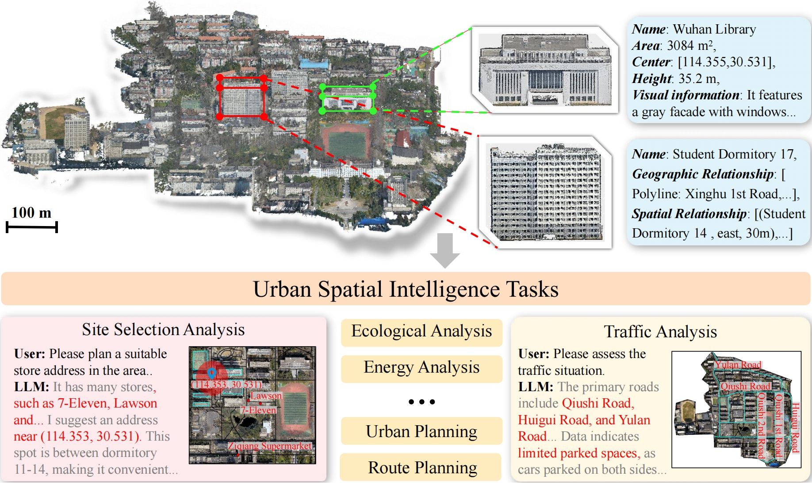

View by [Year], [Topic], [Journal] or [Preprints].
* denotes equal contributions and † denotes the corresponding author.

SpatialLLM: From Multi-modality Data to Urban Spatial Intelligence
Jiabin Chen*, Haiping Wang*, Jinpeng Li, Yuan Liusup>†, Zhen Dongsup>†, Bisheng Yang
arXiv 2025
[Paper]
[Code]
VistaDream: Sampling multiview consistent images for single-view scene reconstruction
Haiping Wang, Yuan Liu, Ziwei Liu, Wenping Wang, Zhen Dong, Bisheng Yang
arXiv 2024
[Paper]
[Code]
[Project]